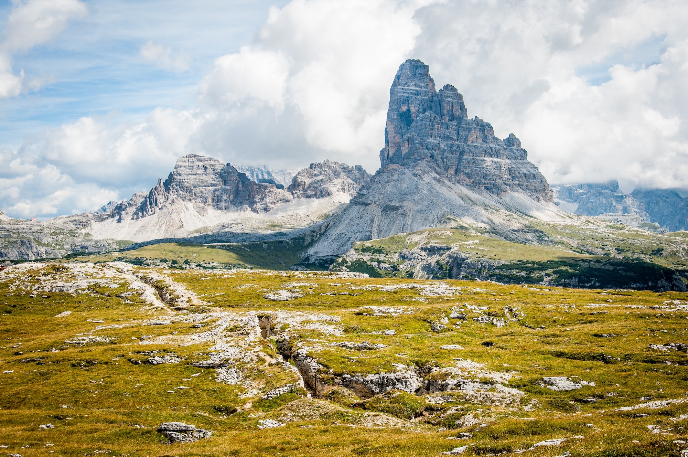
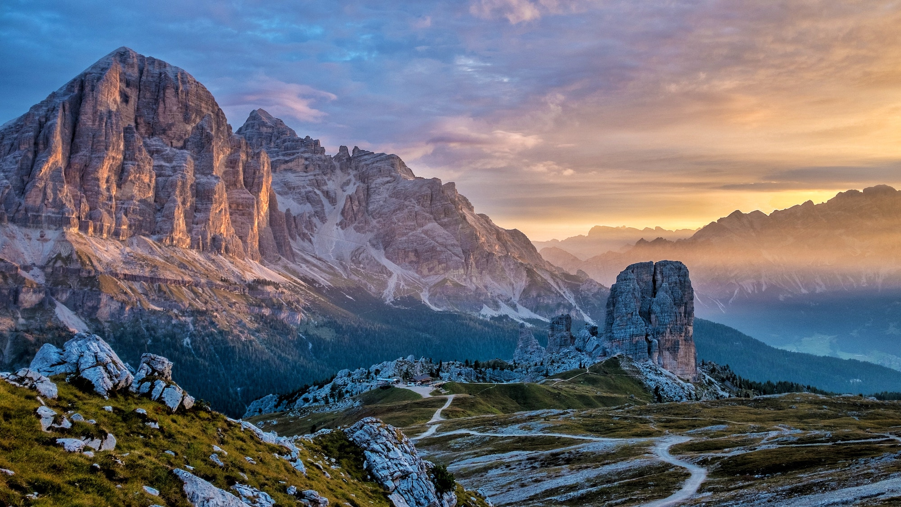
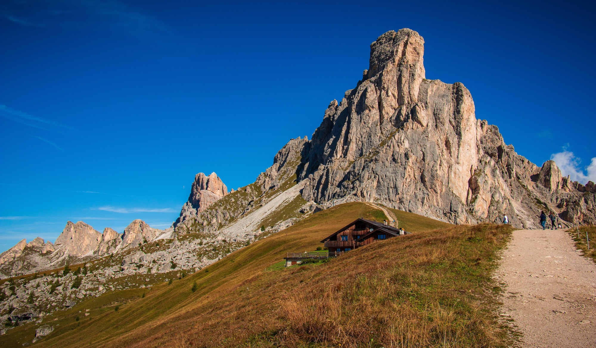

The Dolomites (Italian: Dolomiti; Ladin: Dolomites; German: Dolomiten; Venetian: Dołomiti; Friulian: Dolomitis) are a mountain range located in northeastern Italy. They form a part of the Southern Limestone Alps and extend from the River Adige in the west to the Piave Valley (Pieve di Cadore) in the east. The northern and southern borders are defined by the Puster Valley and the Sugana Valley (Italian: Valsugana). The Dolomites are nearly equally shared between the provinces of Belluno, South Tyrol and Trentino.
Other mountain groups of similar geological structure spread along the River Piave to the east – Dolomiti d'Oltrepiave; and far away over the Adige River to the west – Dolomiti di Brenta (Western Dolomites). A smaller group is called Piccole Dolomiti (Little Dolomites), located between the provinces of Trentino, Verona, and Vicenza (see map).
The Dolomiti Bellunesi National Park and many other regional parks are located in the Dolomites. In August 2009, the Dolomites were declared a UNESCO World Heritage Site.

Etymology
The Dolomites, also known as the "Pale Mountains", take their name from the carbonate rock dolomite. This was named for 18th-century French mineralogist Déodat Gratet de Dolomieu (1750–1801), who was the first to describe the mineral.

History
The Dolomites were formed during the Permian period over 280 million years ago, when parts of Europe and Africa were merged in a supercontinent known as Pangaea. During that time, there was a tropical sea and a great oceanic gulf called the Tethys. The mountains were thrust up and have since weathered. During the First World War, the front line between the Italian and Austro-Hungarian forces ran through the Dolomites, where both sides used mines extensively. Open-air war museums are located at Cinque Torri (Five Towers) and Mount Lagazuoi. Many people visit the Dolomites to climb the vie ferrate, protected paths through the minefields that were created during the war. A number of long-distance footpaths traverse the Dolomites. They are called alte vie (high paths), and are numbered from 1 to 8. The trails take on the order of a week to walk, and are served by numerous rifugi (huts). The first and perhaps most renowned is the Alta Via 1. Radiocarbon dating has been used in the Alta Badia region to demonstrate a connection between landslide activity and climate change.

Tourism
The Dolomites are renowned for skiing in the winter months and mountain climbing, hiking, cycling, and BASE jumping, as well as paragliding and hang gliding in summer and late spring/early autumn. Free climbing has been a tradition in the Dolomites since 1887, when 17-year-old Georg Winkler soloed the first ascent of the pinnacle Die Vajolettürme. The main centres include: Rocca Pietore alongside the Marmolada Glacier, which lies on the border of Trentino and Veneto, the small towns of Alleghe, Falcade, Auronzo, Cortina d'Ampezzo and the villages of Arabba, Urtijëi and San Martino di Castrozza, as well as the whole of the Fassa, Gardena and Badia valleys. Other characteristic places are:
Mount Pasubio and Strada delle 52 Gallerie (a military mule road built during World War I with 52 tunnels).
Altopiano di Asiago and Calà del Sasso, with 4444 steps, the world's longest staircase open to the public.